Simulation & Prediction
This project focuses on developing an electrochemical-thermal coupled simulation to optimize drone battery systems under high-power operating environments. By establishing a physics-based model using dynamic current profiles that reflect actual flight conditions like speed and payload, the simulation accurately predicts battery thermal and electrochemical behaviors. It identifies issues such as worsening temperature non-uniformity and temperature spikes within cells and modules, establishing essential design criteria for thermal management. Ultimately, this established model serves to derive optimal design solutions that maximize the drone's flight range while ensuring both thermal and mechanical safety across diverse operational conditions involving various temperatures and C-rates.
- Constructed a physics-based model using dynamic current profiles according to flight conditions (speed, payload) to accurately predict the thermal and electrochemical behavior of batteries in real-world drone operating environments.
- Identified the worsening temperature non-uniformity and maximum temperature rise tendencies within cells/modules caused by increases in flight speed and payload through simulation, thereby providing criteria for drone battery thermal management design.
- Derived optimal design proposals using the established model to maximize flight range while preserving thermal and mechanical safety under various flight conditions (temperature, C-rate).
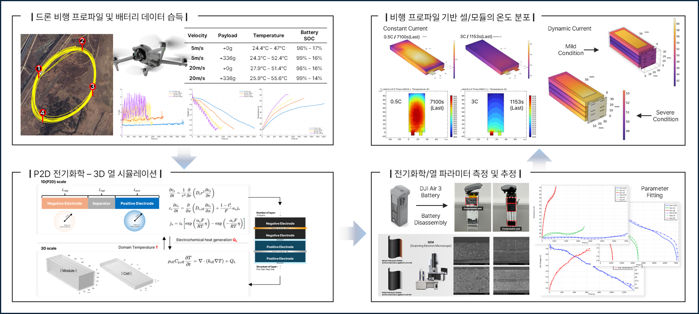
This research focuses on analyzing lithium deposition behavior at the interface of lithium metal electrodes to improve battery stability. The study investigates how the material properties of electrolytes and the Solid Electrolyte Interphase (SEI) layer affect interfacial stability, while predicting dendrite growth behavior under various operating environments. Furthermore, it closely observes microscopic phenomena, including the competition for Li ion concentration between neighboring dendrites, growth suppression mechanisms, and the impact of structural variations on lithium diffusion and subsequent dendrite formation.
- Analyzed stability according to the material properties of the electrolyte and SEI (Solid Electrolyte Interphase) layer.
- Predicted dendrite growth behavior under various environmental conditions.
- Observed lithium diffusion and changes in dendrite formation based on structure.
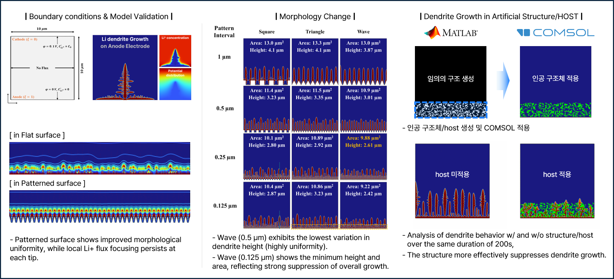
This project focuses on analyzing how the growth of dead lithium reshapes both the electrochemical and mechanical behavior of lithium-metal cells over cycling. By assuming a porous dead lithium layer that forms through irreversible reactions on the lithium-metal surface and expands the overall cell volume, the model captures the rising transport resistance and overpotential this layer imposes on Li-ion movement as its porosity falls and ion path length grows. Using cycle-by-cycle voltage–time data together with cell thickness and pressure responses, it inversely estimates the effective transport parameters of the dead lithium layer and tracks how its porosity decreases and tortuosity increases as cycling proceeds. Ultimately, the established model explains how dead-lithium-driven transport limitation distorts the voltage curve and accelerates capacity fade while altering the cell's mechanical state, providing a quantitative basis for diagnosing and designing more durable lithium-metal cells.
- Constructed a physics-based electrochemical model representing the porous dead lithium layer that reproduces measured charge–discharge voltage cycling, accurately capturing the Li-ion transport limitation and transport overpotential within Li-metal cells.
- Inversely estimated the effective transport parameters (transfer coefficient, electrolyte volume fraction) of the dead lithium layer for each cycle, and derived the decreasing-porosity and increasing-tortuosity trends — together with the cell thickness and volume change — that accompany dead lithium growth.
- Identified how the intensifying inter-layer concentration gradient and rising electrolyte potential shift the cathode's usable stoichiometric range — raising the cathode OCP and triggering early cut-off — thereby systematically explaining the resulting cell capacity fade.
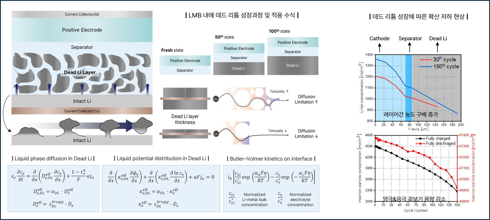
We develop accelerated degradation modeling frameworks for lithium-ion batteries that couple electrochemical and side reaction mechanisms. These frameworks capture SEI growth, transition-metal dissolution, solvent oxidation, and salt decomposition, among other mechanisms, enabling the prediction of long-term aging with reduced computational cost. Through advanced acceleration strategies, our approach maintains accuracy while significantly reducing simulation time, allowing efficient evaluation of cell- and system-level performance.
- COMSOL-based P2D degradation model
- Long-term degradation simulation with acceleration factor
- Experimental validation of SOH and performance
- SEI growth and Li loss modeling
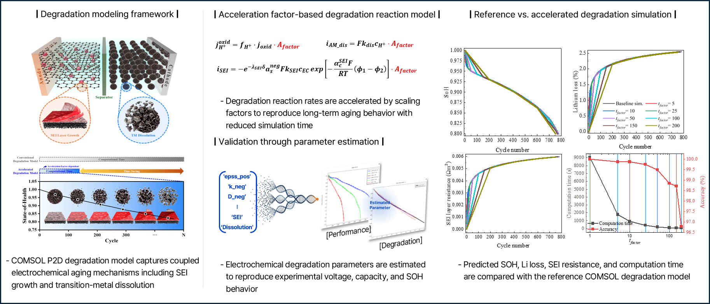
The aim is to deeply elucidate and predict the phenomenon of thermal runaway (TR)—a critical safety issue in lithium-ion batteries—and its propagation mechanisms. A high-precision simulation model will be established to observe the entire process, from initiation to propagation of thermal runaway, within a virtual environment. This allows for the quantitative analysis of the physical and chemical characteristics at each stage. Ultimately, this study seeks to provide essential predictive technologies for battery system design and the establishment of safety standards, thereby contributing to a significant improvement in battery safety.
- DSC (Differential Scanning Calorimetry) data is used to isolate and analyze individual exothermic reaction components (SEI decomposition, anode/cathode reactions, binder reactions) involved in thermal runaway.
- A Chemical Reaction Neural Network (CRNN) is applied to DSC data to quantitatively extract reaction kinetic parameters (pre-exponential factors, activation energies), enabling precise modeling of thermal runaway onset and progression.
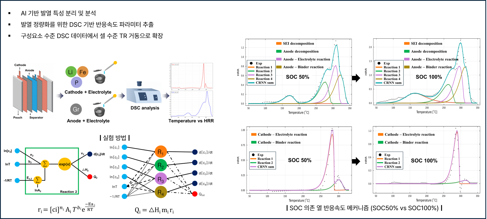
AI & Control
We develop control strategies and BMS algorithms for estimation, balancing, and fault diagnosis. These methods are demonstrated and validated at the module, pack, and system levels under real-world operating conditions. Our field studies extend across EVs, ESS, UAM, and advanced mobility platforms. Also we study a BMS topology that embeds COMSOL’s physics-based battery model directly into a Simulink circuit, so that electrochemical and thermal state changes (e.g., lithium stoichiometry, side-reaction heat, SEI growth, parameter fade) feed the controller in real time. The co-simulation lets the BMS make decisions—balancing, derating, protection—using physico-chemical truth rather than lumped surrogates, enabling precise prediction of pack heat generation and cell degradation under realistic drive cycles and control actions.
- Battery management system (BMS) algorithm development
- Fault diagnosis and health monitoring
- AI applied BMS topology with advanced balancing strategies
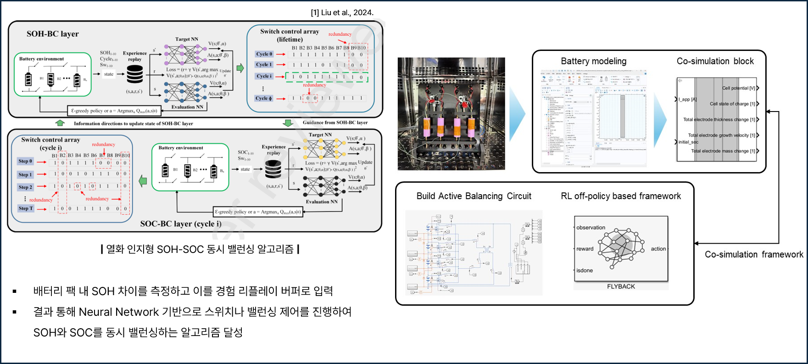
This study develops an AI-based framework for the accurate estimation of the state of health (SoH) in lithium-ion batteries (LIBs). A comprehensive database reflecting real-world operating conditions, including variations in temperature, charge/discharge profiles, and usage history, was constructed. The dataset was divided into training and validation sets, and machine learning algorithms were employed to capture nonlinear degradation patterns. The proposed model effectively accounts for current, voltage, and state-of-charge (SoC) conditions, and its predictive performance was evaluated using root mean square error (RMSE) metrics. Moreover, full-cycle SoH estimation was performed and validated against experimental ground truths, confirming the reliability of the model. The findings demonstrate that the proposed approach can contribute to the development of precise diagnostic tools for enhancing battery performance and safety, and can be further applied to the design of high-reliability battery management systems (BMS) and next-generation energy storage technologies.
- PINN-based SOH and power prediction
- Improved prediction stability with physics constraints
- Path-dependent degradation modeling
- Electrochemical feature extraction from cycling curves
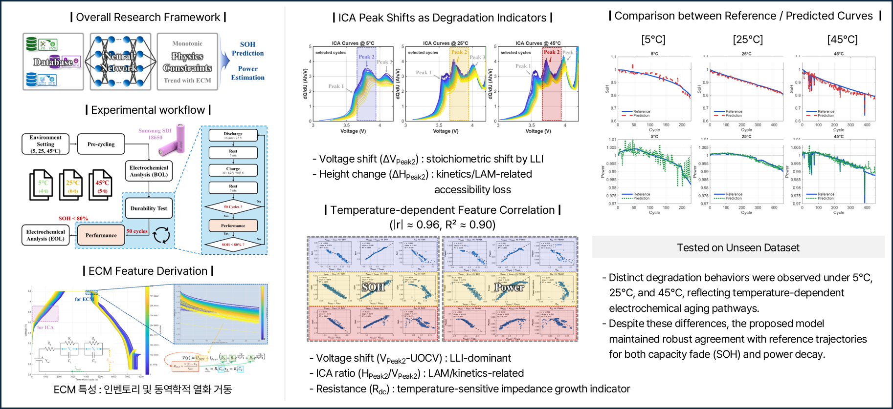
As batteries age and are reused, their internal condition becomes increasingly non-uniform and difficult to monitor. This study develops a data-driven approach to estimate the temperature of each individual cell in a reused battery module, using only the limited sensors available in commercial battery management systems.
- Enables cell-level thermal monitoring without additional hardware
- Validated across multiple aging stages, capturing real degradation effects
- Lightweight neural network approach suitable for real-time BMS integration
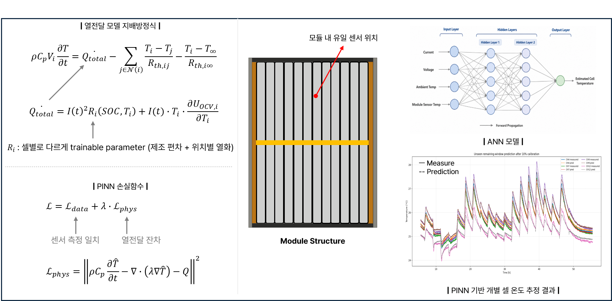
This study proposes a driving data-based dynamic EIS estimation method for lithium-ion batteries that operates without external AC signal injection or dedicated measurement hardware. Rather than relying on conventional potentiostatic EIS, which requires steady-state conditions and specialized equipment, the proposed approach leverages the naturally occurring current and voltage perturbations generated during electric vehicle driving cycles. The method is designed to be computationally lightweight and directly embeddable in real-time battery management systems without additional hardware modifications.
- Dynamic EIS-based Online Impedance Estimation
- Real-Time Driving Cycle
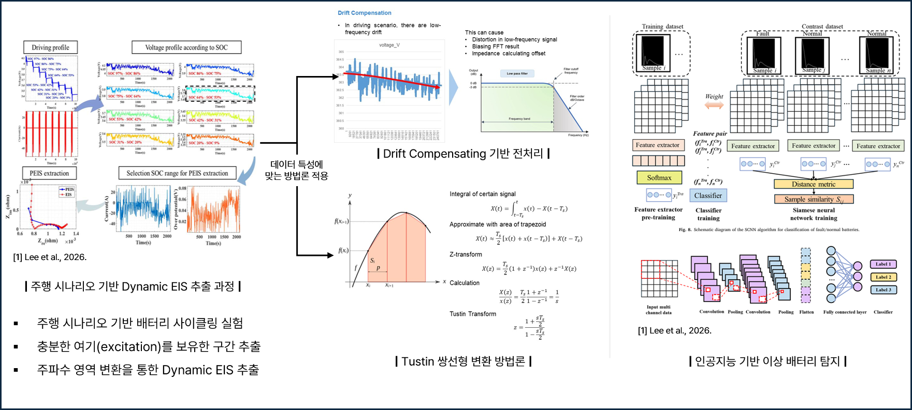
This project focuses on estimating Equivalent Circuit Model (ECM) parameters from EIS data using a hybrid optimization framework that combines global search via Differential Evolution (DE) and local refinement via Complex Nonlinear Least Squares (CNLS). To overcome the limitations of fixed DE parameters (F, CR), the Adaptive DE (JADE) algorithm is applied with generation-wise auto-tuning to enhance convergence stability. The introduction of CPE and Finite-Length Warburg (FLW) impedance elements further improves ECM fitting accuracy across the full SOC range, particularly at low SOC conditions.
- Developed a hybrid global-local optimization framework combining JADE-based Differential Evolution for broad solution space exploration and CNLS for precise local convergence, achieving simultaneous improvements in accuracy and stability.
- Applied the JADE algorithm with adaptive F/CR parameter control to overcome the convergence limitations of conventional fixed-parameter DE, enabling robust ECM parameter estimation across diverse temperature and SOC conditions.
- Introduced CPE and Finite-Length Warburg impedance elements into the ECM circuit model, improving fitting accuracy across the full SOC range and achieving an average RMSE reduction of approximately 42% compared to CNLS-only approaches.
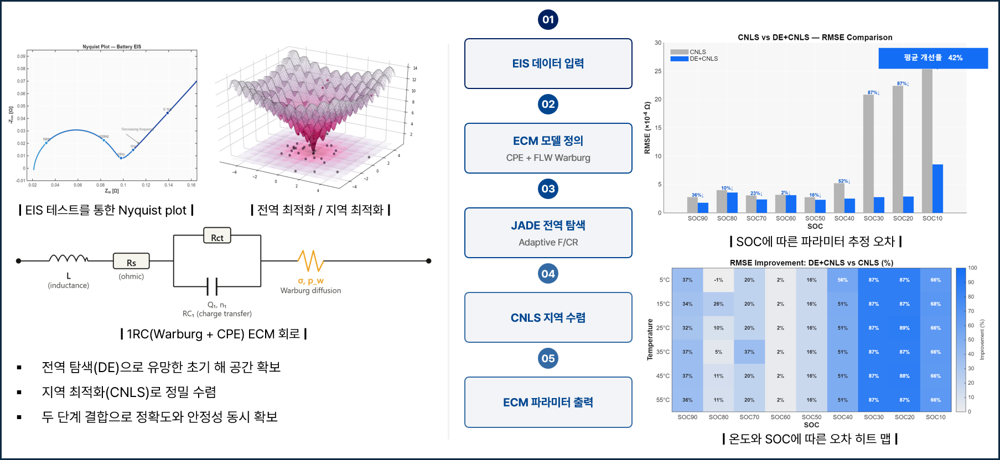
Optimization & Demonstration
This research develops an integrated vehicle-level simulation framework that combines traffic environments, vehicle dynamics, battery systems, and thermal management systems to evaluate and optimize electric vehicle performance under realistic driving conditions. The framework incorporates traffic flow characteristics, road gradients, ambient temperature variations, powertrain energy conversion processes, battery aging mechanisms, and battery thermal management system (BTMS) operations within a unified simulation environment. Based on the generated driving scenarios, predictive control and optimization strategies are employed to simultaneously minimize energy consumption and battery degradation while maintaining vehicle performance and operational constraints.
- Multi-Domain Simulation, Digital Twin-Oriented Platform
- Battery Aging-Aware Vehicle Operation
- Realistic Driving Scenario Assessment
- Joint Energy–Degradation Optimization
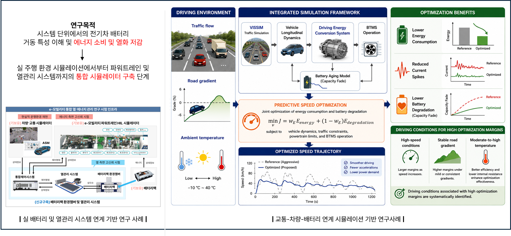
This study aimed at optimizing cell-level battery performance through physics-based microstructural analysis. The electrode microstructure is first segmented into three distinct domains — pore, active material, and carbon-binder — from which key transport properties such as tortuosity (τ) and effective diffusion coefficient (D_eff) are quantitatively extracted using mathematical formulations grounded in ionic resistance and porosity. These microstructure-derived properties are then integrated into a P2D electrochemical model, enabling accurate prediction of voltage-capacity behavior under varying structural conditions, including different active material fractions (AM) and carbon-binder (CB/PVDF) ratios. By linking pore connectivity and Li-ion flux distribution directly to electrode utilization and performance curves, the framework provides a systematic pathway for optimizing battery electrode composition and architecture without relying solely on empirical trial-and-error approaches.
- P2D model with microstructure-derived properties
- Performance optimization by electrode composition and structure
- Microstructure-based transport property quantification
- Tortuosity and diffusion coefficient calculation
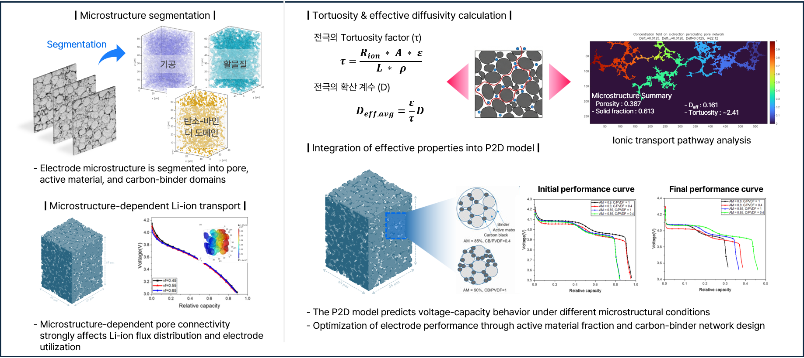
By applying parameter estimation techniques to voltage response data collected across multiple cells and cycling conditions, the framework quantitatively evaluates key material properties — such as solid-state diffusion coefficient (Dₛ) and reaction rate constant (k) — and tracks their degradation over cycle number. A PCE (Polynomial Chaos Expansion)-based surrogate model is further constructed to replace the computationally expensive P2D model, enabling rapid prediction of cell voltage and temperature. This surrogate model is then integrated into a multi-step fast charging protocol optimization framework, where C-rates across sequential charging stages are optimized to maximize charging speed while managing thermal and electrochemical constraints.
- Electrochemical model parameters (Dₛ, k) are extracted from experimental voltage data via optimization-based estimation, enabling quantitative diagnosis of material degradation and performance comparison across different cell types and cycling histories.
- A PCE-based surrogate model replaces the full P2D simulation to construct a computationally efficient fast-charging optimization protocol, simultaneously optimizing multi-stage C-rates while predicting cell voltage, temperature, and charge capacity as outputs.
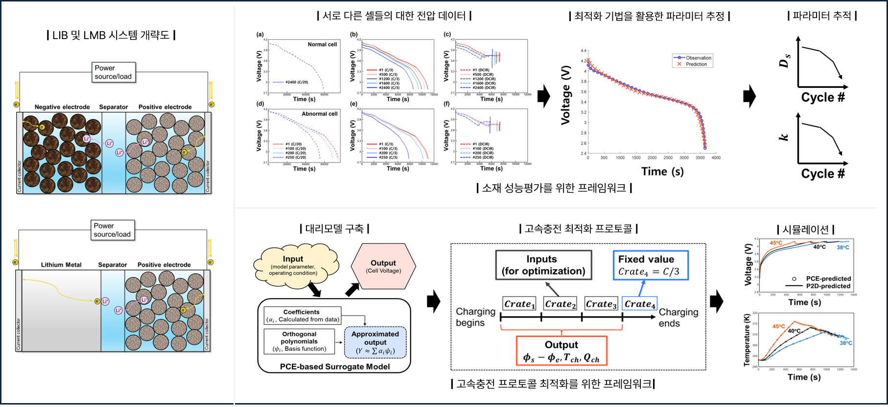
This study develops an efficient multi-scale design optimization framework for electric vehicles (EVs) that integrates four hierarchical levels, ranging from the battery cell level to the marketing level. In the engineering domain, three physics-based models are constructed to describe the system’s performance: an electrochemical cell model, a thermal module model, and an EV dynamics model. In the marketing domain, a utility model is employed to maximize profit while considering customer preferences and cost constraints. Furthermore, the vehicle model, which represents the highest level within the engineering hierarchy, is interlinked with the marketing model, enabling integrated decision-making. As a result, all four model levels are hierarchically connected, allowing bidirectional information exchange across engineering and marketing domains for comprehensive optimization.
- A four-level hierarchical optimization framework (Cell → Module → Pack → Marketing) is constructed to enable bidirectional information exchange between physics-based engineering models and a utility-based marketing model for comprehensive EV design optimization.
- Cell-level design variables such as anode/cathode porosity, electrode thickness, and number of layers are analytically cascaded upward through thermal and dynamics models to directly influence vehicle-level performance metrics and market profitability.
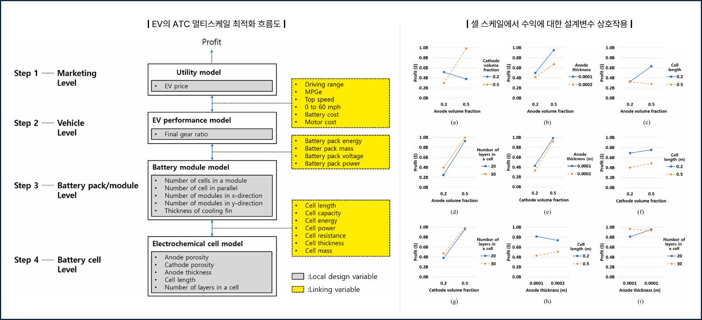
We develop multi-scale optimization frameworks that integrate cell-level physics with vehicle and operational-level performance. These frameworks incorporate degradation-coupled models at the cell scale, link them into vehicle-level constraints, and extend to fleet and charging strategies at the operation scale. By integrating design variables and engineering constraints across all levels, we enable holistic optimization of battery and mobility systems.
- Cell scale: Physics-based, high-fidelity models incorporating degradation and electrochemical dynamics
- Vehicle scale: Performance-driven design considering range, power, and pack configuration
- Operation scale: Fleet and charging coordination with cost–service trade-offs
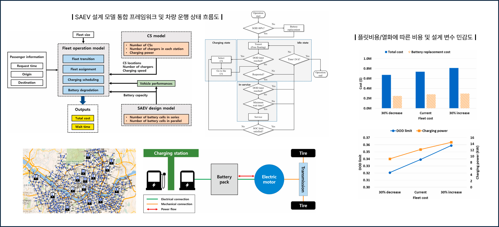